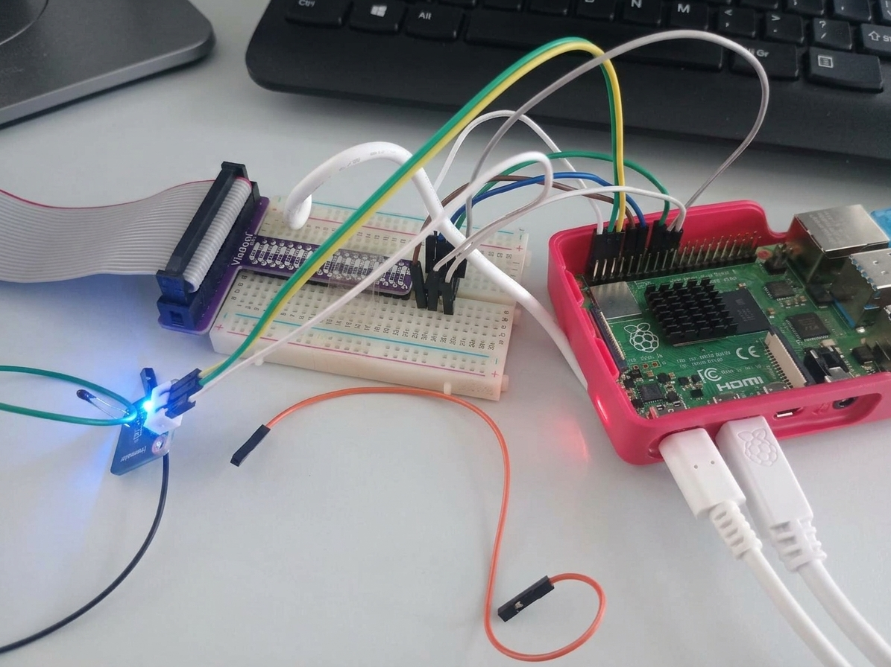
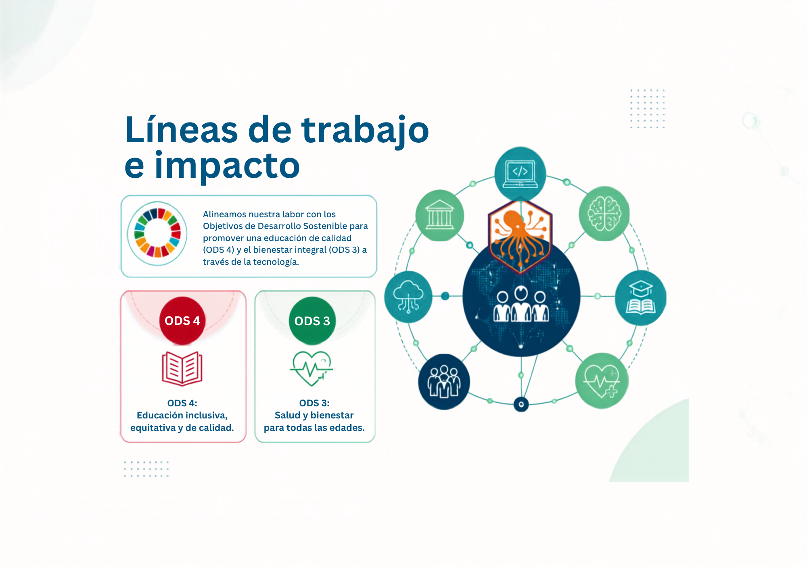
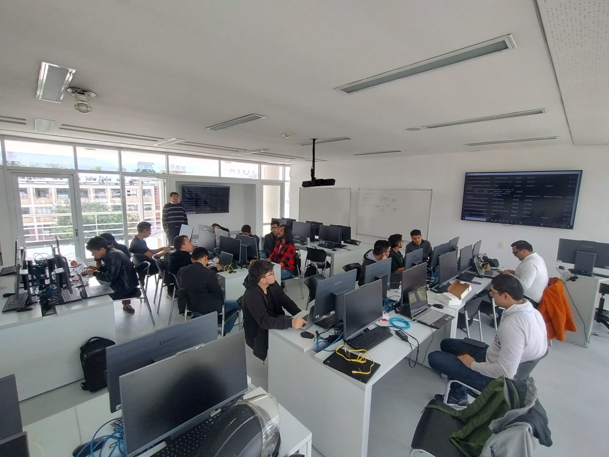

Orbis Tertius
En Orbis Tertius, buscamos contribuir a la investigación y al estudio de los sistemas distribuidos en tecnologías actuales como Internet de las Cosas (IoT), computación en la nube y virtualización, entre otras.
Nuestro foco se articula en la formación de estudiantes investigadores con formación en sistemas distribuidos mediante proyectos, promoción y divulgación en la comunidad universitaria. Con el objetivo de realizar proyectos de investigación con alto impacto en la academia y la sociedad, que permitan el desarrollo de nuevas tecnologías y soluciones a problemas complejos.
"El mundo será Tlön."
Jorge Luis Borges, Ficciones
Sistemas distribuidos al servicio del conocimiento
En Orbis abordamos la administración avanzada de Linux, el despliegue de redes Mesh descentralizadas, IoT en edge computing y la orquestación ligera en alta disponibilidad.
Conectamos la teoría con la práctica, formando talento humano y promoviendo la investigación en arquitecturas resilientes y tolerantes a fallas dentro de la comunidad universitaria.
A través de proyectos con hardware accesible como Raspberry Pi, nuestros integrantes experimentan con protocolos como B.A.T.M.A.N., herramientas de orquestación como K0s y Docker swarm, y la utilización de sensores y protocolos IoT como MQTT, entre otras lineas de investigación.


Líneas de trabajo e impacto
Investigamos y desarrollamos en ingeniería de software e inteligencia artificial, integrando las TIC con un enfoque de inclusión social y ciudadanía.
Alineamos nuestra labor con los Objetivos de Desarrollo Sostenible para promover una educación de calidad (ODS 4) y el bienestar integral (ODS 3) a través de la tecnología.
Ecosistema y ruta de aprendizaje TLÖN
La metodología del semillero se articula en sesiones de 2 a 3 horas cada semana, combinando en su mayoria encuentros presenciales y algunos virtuales, dedicados al estudio de sistemas distribuidos computacionales.
A través de los recursos del grupo TLÖN, los integrantes acceden a material fisico y de estudio para la realización de prácticas avanzadas con dispositivos embebidos.
El proceso cuenta con la mentoría de docentes, estudiantes de posgrado y egresados, e incluye un curso en fundamentos de investigación para el aprovechamiento integral de las herramientas institucionales.
